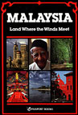
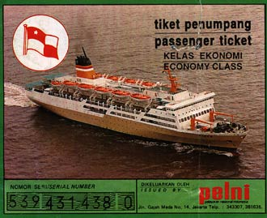
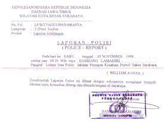
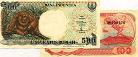

Sent: 09 Nov 99 13:33 GMT
web version, with
|
 |
| Prior Trav-E-Log: Halloween | Travel guides with pictures are too heavy to backpack. |
(Note:) This is the 6th in a series of Trav-E-Logs sent while traveling in S.E.Asia between Oct 16, 1999 and Jan 22, 2000.Hi Folks,
Left the island of Bali, sitting in a reserved seat on a bus, heading for Surabaya on Java. Actually, the island is "Jawa" as "v" in the Indonesian language is only used in foreign words. Following instructions of well-wishers in Ubud, I arrived at the Denpasar bus station shortly after noon and buy a ticket -- for a 6 PM departure. The few bus companies with earlier departures (5:30 pm) don't look appealing. The one I am using will not accept more passengers than seats on the bus, so it is a little more expensive. Spend the next several hours walking around, and also looking for a cyber café. Found a super market/mini mall, with Cino-Cimi fried chicken, Dunkin' Donuts, video arcade, and super store for all types of dime store items, and many food stalls, but no cyber cafes in that part of town. Oh well, bought more fruit for the bus ride.
While waiting, I had my first roll of film developed. Mom and Pop at the Fuji Film shop were very nice, and invited me to come behind the counter while waiting the 30 minutes required. Obviously, I took out the fiddle and went through a bunch of old-time tunes for them. I think they liked the tunes, and offered me fruit and drink. Pop even made a few requests for tunes I did not know. Seems everyone wants me to play tunes from the 70's and 80's - but most of you know these are all "before my time", so to speak.
The bus left Denpasar at 6:05, shortly before sundown. I was pleasantly surprised to find my seat mate was a mechanical engineer working for a company making oil well drilling equipment. He had been to Houston just a few months earlier. Back on the bus, the drive was a long one to the ferry terminus for Jawa. This is the second time in my life I have made this particular journey, at night, because longhaul buses do not make this trip in daylight. What a bummer. A third of Bali unseen in daylight!
For over two hours we waited for our bus' turn to board a ferry for the 30 minute crossing of the Bali Strait. Ferries appeared to be departing every 15 minutes or so, but the shear volume of traffic was apparently caused by students returning from some sort of middle school holiday. The commotion was unbelievable. Almost every inch of platform space was occupied by vendors selling anything a tourist may purchase, -- directly under the signs hung from the roof saying 'selling of anything here is forbidden'. Gifts, fruit, snacks, laser pens, toys, kites, lunches, drinks, cigarettes, you name it. It had been raining on and off most of the day, and the place was just a mess. I stayed on the bus, thus avoiding all but the very bold merchants that climbed aboard.
Placing vehicles on the ferry was an art. The crew directed each vehicle where to park, and left no more than inches between any wall or other vehicles. Even usage of the front and end spaces for vehicles was more efficient than I could ever have imagined. Even a picture will not give justice to the skill these folks had in packing.
Now on Jawa, the bus forged ahead on its journey. Next stop, about 3:30 AM, was at a typical roadside restaurant catering to busloads of Indonesian tourists. Each passenger on our bus was given a coupon for a meal, buffet style. Yes, I've read all the warnings about eating at these roadside places, but I was tired, dirty, sweaty, and hungry. These places are notorious for wiping off the plates and glasses with a dirty rag between customers. Most items were stew-like, except the rice and 2 pieces of fried chicken. Don't think McNuggets here, although that was the size. Think neck and backbone, meatless, skin on. And the rice was totally bland, not like the delicious Basmati or Thai rice. But the cabbage item and the potato item were rather tasty, and like I said, I was hungry. But as you know I always look for the silver lining, and I found it: In the wee hours of the morning, all the vendors were asleep, and so we ate in peace.
Arrived at the main Surabaya bus terminal, ~20 km south of the city center, at 6 am. Boarded a bus with passengers packed like sardines to take me to the port, ~10 km north of the city, where information should be available for making onward plans to Malaysia and possibly Thailand, by ship. There, I was directed to the Pelni office, which turned out to be just another travel agent. The agent told me the actual Pelni office was in down town Surabaya. After 1 and 1/2 hours of word-by-word translation, I booked passage on a Pelni ship leaving the next day for Dumai, on the island of Sumatra. The agent assures me there are daily sailings from Dumai to Melaka (Malacca), in Malaysia. Only snag was that they would issue me a receipt today, and that I had to return the following morning for the actual ticket. They assured me ship boarding was just around the corner, so it would not be out of my way to come back to this office.
Hopped another "sardine" bus for city center, and the "red bridge", where my guidebook says I can find inexpensive lodging. I tell the driver red bridge in Indonesian, and he nods. The sign in the terminal gives the price, so I have all the data I need. I had been on the bus, standing between two seats for what appeared to be about the proper time, when a fight breaks out behind me. Lots of pushing and shoving. The passengers around me escape towards the front of the bus, but I'm too crammed in to move. I try not to stare, but notice one participant is wearing a muslim hat, and appears intimidated by the other participant. The conductor comes back, but turns around and heads back up to the front of the bus. Then the conductor gets all excited, and tells me red bridge was two blocks behind, and I should get off right now. So, I struggle through the crowd at the back, get off, and the bus pulls away. Instinctively I check for my wallet, and it is gone. Now I know what the fight was about. I suspect the man in the hat was trying to alert me, but was threatened into silence by the taller man behind me.
As is normal in Indonesia, people start gathering around me, the foreigner. I say one word, "polis", and I have never seen folks scatter so quickly. The closest intersection has a police box. There I'm directed towards the police station, where a report is typed up for me, and I sign it. My wallet had all my Indonesian currency (about $100), US$100, credit card, business cards, receipts, and pictures. The officers also give me directions to the "U.S. Embassy" (consulate), and a hotel. Fortunately, a bank is along the way, where I cash another travelers check.
It's only about 9 AM, but I check into the closest hotel, even though it is well over my budget. Nice room, overlooking the city, air-conditioned, with Internet access. These latter two things I desperately need, for I must both calm down, and cancel the charge card. The long hot shower, shave, and fresh set of clothes helps my morale. After sending out two urgent messages, I go back upstairs, eat a little more fruit, and crash.
Other than a quick trip to a near-by mall for a new wallet, and 2 pieces of McDonald's fried chicken, (Okay, you can hiss and boo, Americana in Asia), hibernation seems the right thing to do. Between naps, fiddling is my pleasure. Then I turn on the TV, and learn about monsoons in India and Cambodia, (I'm heading for Thailand, right in between the two????), and snippets about an Egyptian airliner leaving the USA that went down in the Atlantic. Ate dinner in the hotel restaurant, then went back to sleep. Didn't want to deal with buses the following morning, so took a taxi to the port, after checking out of the Hotel Ibis. I'm still obsessing on the financial loss, and not thinking clearly. The taxi driver lets me out at the wrong port, so it takes another bus ride, second taxi, and three more hours to pick up my tickets and get to the proper port for boarding. I'm grateful the three-day ship voyage was paid before the wallet was stolen.
Bill